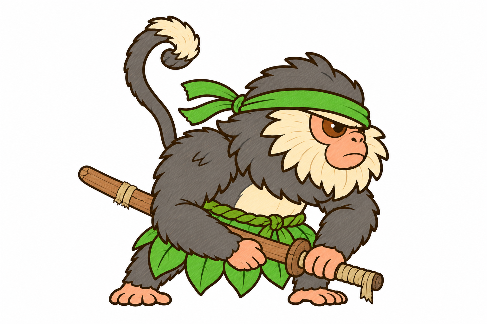
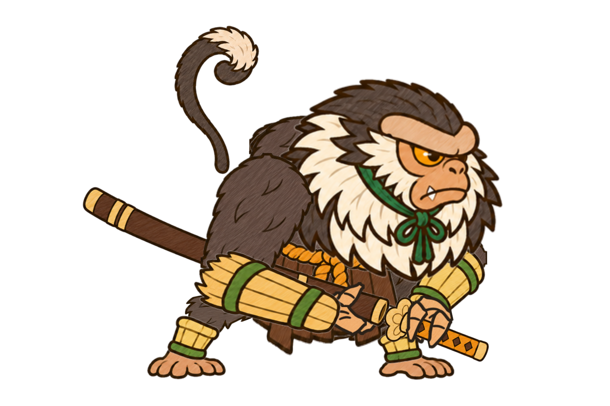
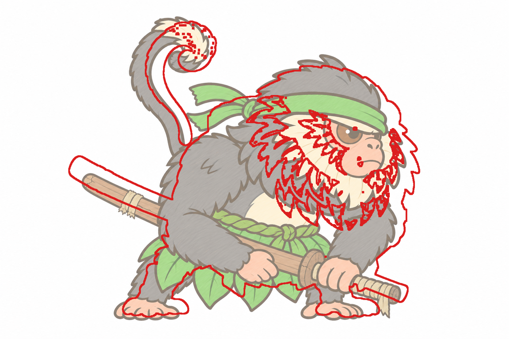
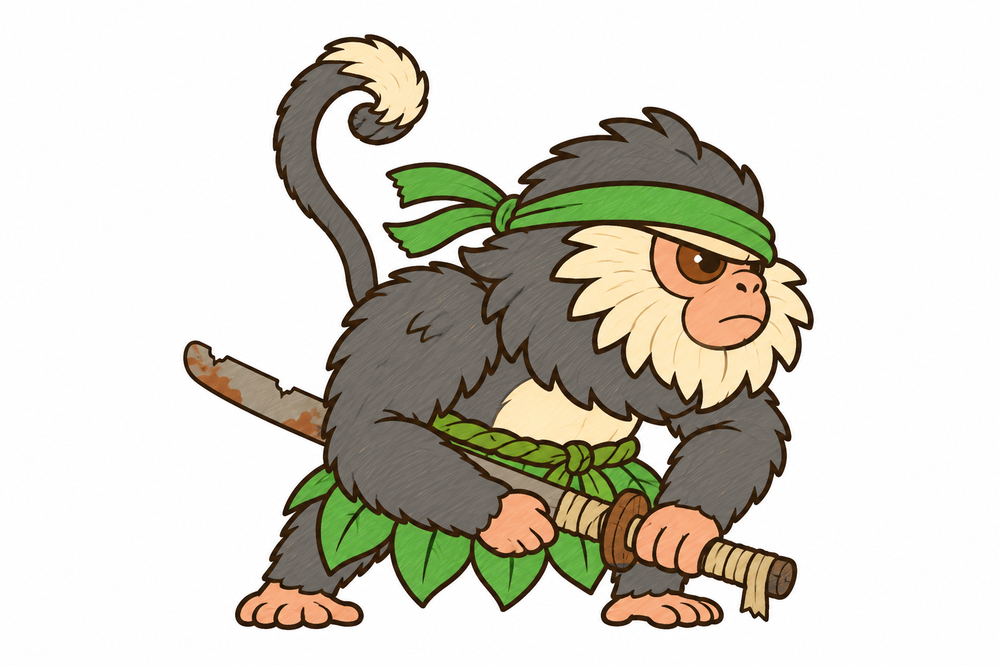
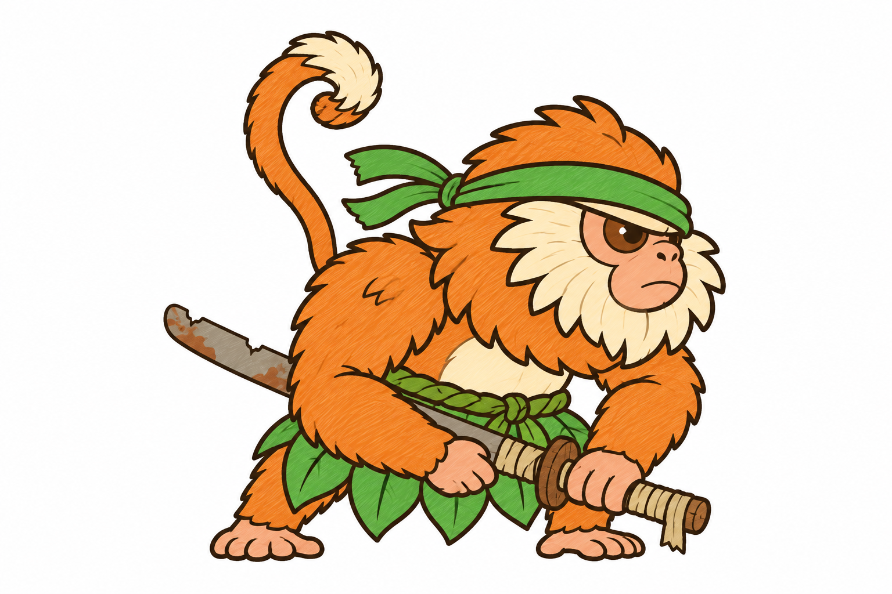
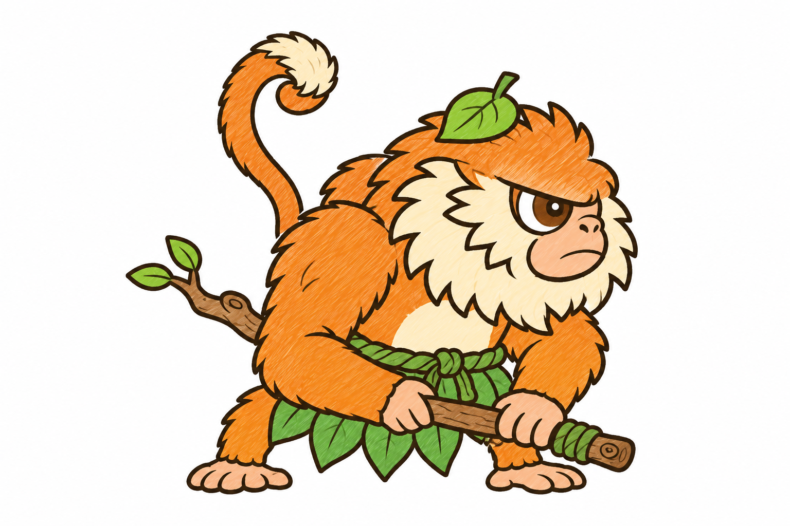

Dạng lớn: Voọc Tướng
Dạng lớn: Voọc TướngLượt 3: con đã chọn (kiếm cũ cùn), lông xám nhạt hơn dạng lớn, kiếm nằm trong vỏ gỗ; cầm như dạng lớn: tay gần nắm vỏ, kiếm cách ở miệng vỏ, tay xa nắm chuôi.

Lượt 3 · kiếm trong vỏ gỗ, lông xám #6F6A63Vỏ gỗ trơn có thớ, một vết nứt buộc vải sờn; kiếm cách gỗ nứt; chuôi quấn vải sờn thả một đầu. Không lộ lưỡi (lưỡi cùn mẻ gỉ hiện khi rút kiếm).
Bố cục (rig dạng 1, có vỏ kiếm)Chỗ đặt vỏ, kiếm cách, chuôi theo rig.
Chồng viền bố cục (đỏ) lên lượt 3Vỏ trong concept thấp và thoải hơn rig ~50 px ở mũi: không sao, mảnh kiếm vẽ riêng rồi đặt theo trục kiếm của rig.
Lượt 2 đổi lông xám (bằng mã)
Lượt 2 · kiếm cũ cùn (đã chọn)
Lượt 2 · cành câyDạng lớn: Voọc Tướng